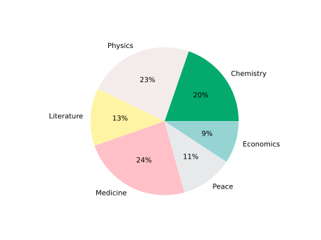

A pie chart visually presents qualitative data.
Pie graphs are used to show the distribution of qualitative (categorical) data.
It shows the frequency or relative frequency of values in the data.
Frequency is the amount of times that value appeared in the data. Relative frequency is the percentage of the total.
Each category is represented with a slice in the 'pie' (circle). The size of each slice represents the frequency of values from that category in the data.
Here is a pie chart of the number of people who have won a Nobel Prize in each category up to the year 2020:
This pie chart shows relative frequency. So each slice is sized by the percentage for each category.
Some of the categories have existed longer than others. Multiple winners are also more common in some categories. So there is a different number of winners in each category.